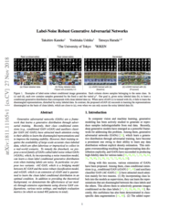

Abstract
Generative adversarial networks (GANs) are a framework that learns a generative distribution through adversarial training. Recently, their class-conditional extensions (e.g., conditional GAN (cGAN) and auxiliary classifier GAN (AC-GAN)) have attracted much attention owing to their ability to learn the disentangled representations and to improve the training stability. However, their training requires the availability of large-scale accurate class-labeled data, which are often laborious or impractical to collect in a real-world scenario. To remedy this, we propose a novel family of GANs called label-noise robust GANs (rGANs), which, by incorporating a noise transition model, can learn a clean label conditional generative distribution even when training labels are noisy. In particular, we propose two variants: rAC-GAN, which is a bridging model between AC-GAN and the label-noise robust classification model, and rcGAN, which is an extension of cGAN and solves this problem with no reliance on any classifier. In addition to providing the theoretical background, we demonstrate the effectiveness of our models through extensive experiments using diverse GAN configurations, various noise settings, and multiple evaluation metrics (in which we tested 402 conditions in total).
Paper
|  |
[Paper] arXiv:1811.11165 Nov. 2018. |
Citation
Takuhiro Kaneko, Yoshitaka Ushiku, and Tatsuya Harada.
Label-Noise Robust Generative Adversarial Networks. In CVPR, 2019.
[BibTex]
Code
Overview
Our task is, when given noisy labeled data, to construct a label-noise robust conditional generator that can generate an image conditioned on the clean label rather than conditioned on the noisy label. Our main idea for solving this problem is to incorporate a noise transition model (viewed as orange rectangles in Figures 2(b) and (d); which represents a probability that a clean label is corrupted to a noisy label) into typical class-conditional GANs. In particular, we develop two variants: rAC-GAN (Figure 2(b)) and rcGAN (Figure 2(d)) that are extensions of AC-GAN [1] (Figure 2(a)) and cGAN [2] [3] (Figure 2(c)), respectively.

Samples
CIFAR-10 (symmetric noise with a noise rate of 0.5)


Acknowledgement
We would like to thank Hiroharu Kato, Yusuke Mukuta, and Mikihiro Tanaka for helpful discussions. This work was supported by JSPS KAKENHI Grant Number JP17H06100, partially supported by JST CREST Grant Number JPMJCR1403, Japan, and partially supported by the Ministry of Education, Culture, Sports, Science and Technology (MEXT) as "Seminal Issue on Post-K Computer."
Related work
[1]
A. Odena, C. Olah, and J. Shlens.
Conditional image synthesis with auxiliary classifier GANs.
In ICML, 2017.
[arXiv]
[2]
M. Mirza and S. Osindero.
Conditional generative adversarial nets.
arXiv preprint arXiv:1411.1784, 2014.
[arXiv]
[3]
T. Miyato and M. Koyama.
cGANs with projection discriminator.
In ICLR, 2018.
[arXiv]